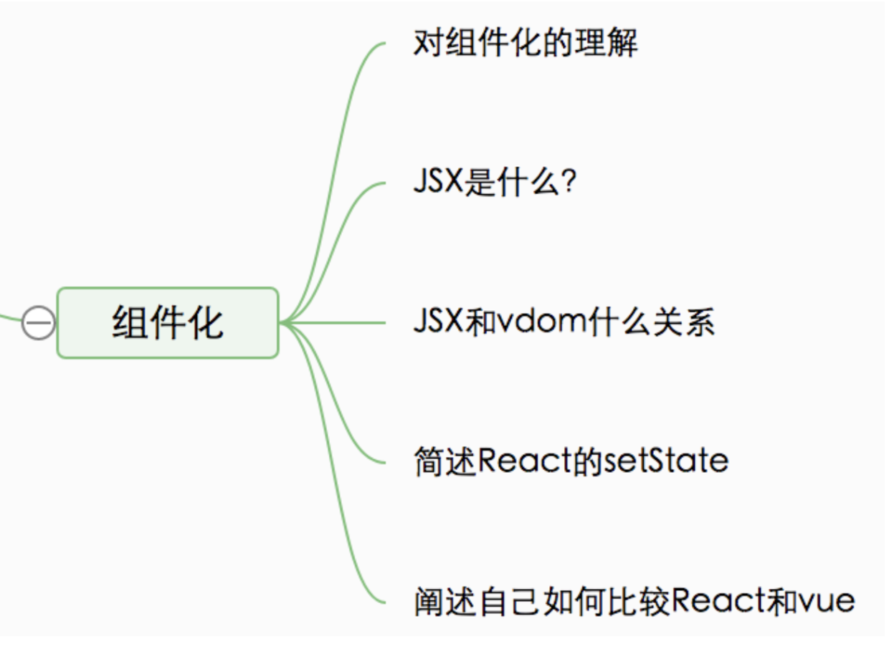
# 一、说一下对组件化的理解
# 1.1 组件的封装
- 视图
- 数据
- 变化逻辑
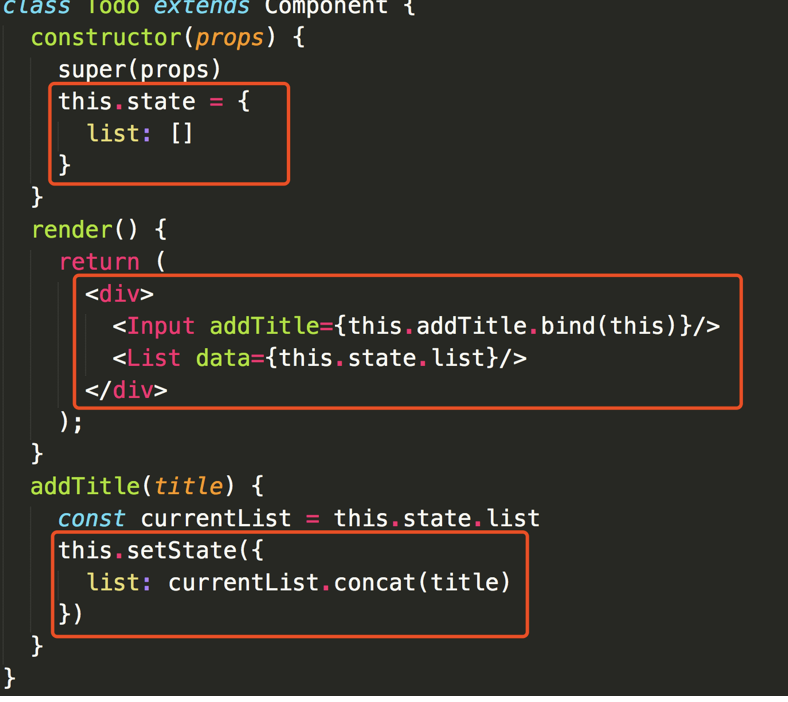
# 1.2 组件的复用
props传递- 复用
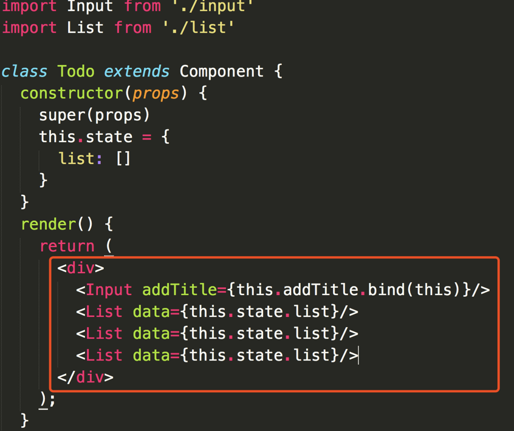
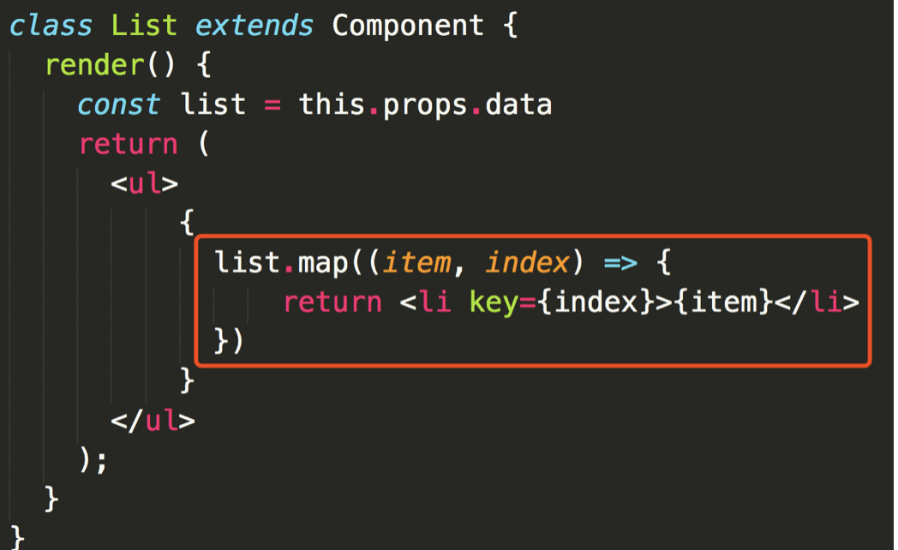
# 二、JSX 本质是什么
# 2.1 JSX 语法
html形式- 引入
JS变量和表达式 - 循环
style和className- 事件
- JSX 语法根本无法被浏览器所解析
- 那么它如何在浏览器运行？
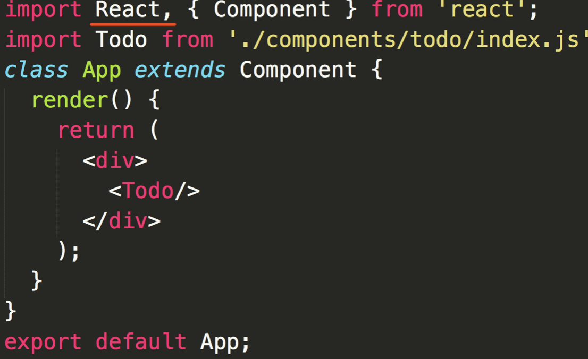
# 2.2 JSX 解析
JSX其实是语法糖- 开发环境会将
JSX编译成JS代码 JSX的写法大大降低了学习成本和编码工作量- 同时，
JSX也会增加debug成本
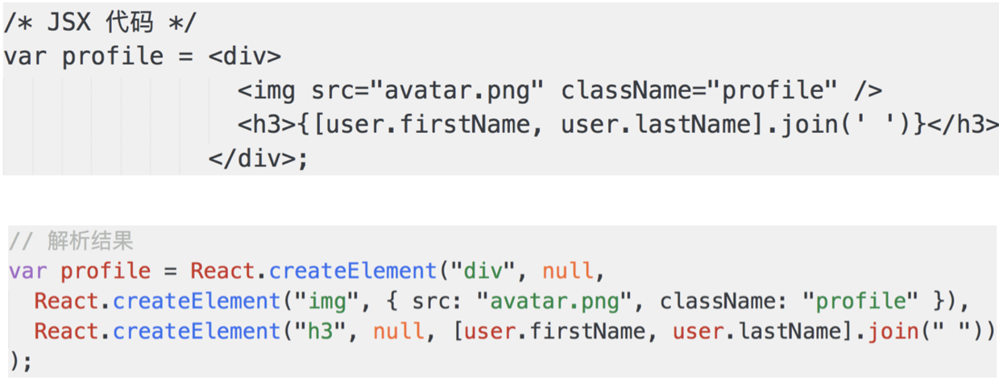
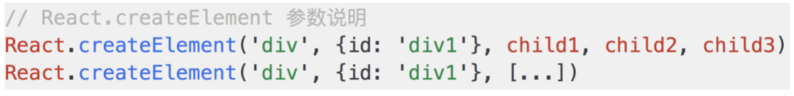
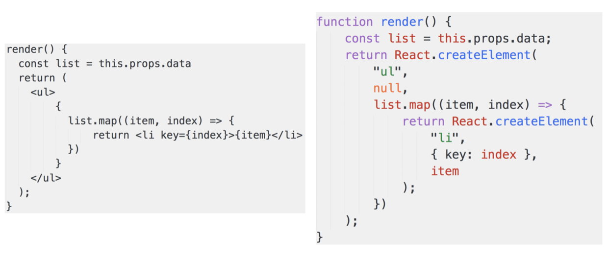
# 2.3 JSX 独立的标准
JSX是React引入的，但不是React独有的React已经将它作为一个独立标准开放，其他项目也可用React.createElement是可以自定义修改的- 说明：本身功能已经完备；和其他标准监控和扩展性没问题
# 三、JSX 和 vdom 的关系
# 3.1 为何需要 vdom
vdom是React初次推广开来的，结合JSXJSX就是模板，最终要渲染成html- 初次渲染 + 修改
state后的re-render - 正好符合
vdom的应用场景
# 3.2 React.createElement 和 h
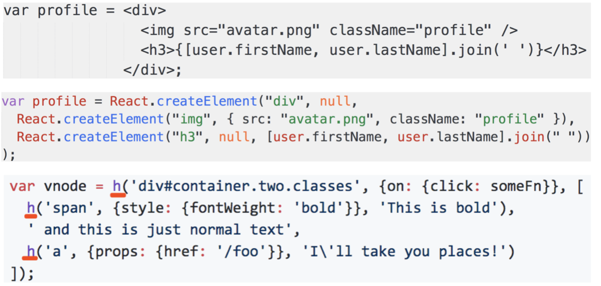
# 3.3 何时 patch
- 初次渲染 -
ReactDOM.render(<App/>, container) - 会触发
patch(container, vnode) re-render-setState- 会触发
patch(vnode, newVnode)
# 3.4 自定义组件的解析
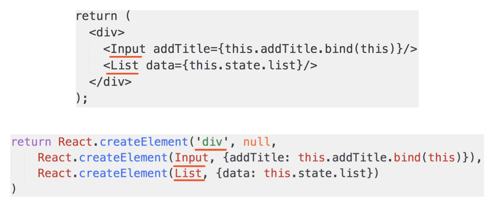
‘div’- 直接渲染<div>即可，vdom可以做到Input和List，是自定义组件（class），vdom默认不认识- 因此
Input和List定义的时候必须声明render函数 - 根据
props初始化实例，然后执行实例的render函数 render函数返回的还是vnode对象
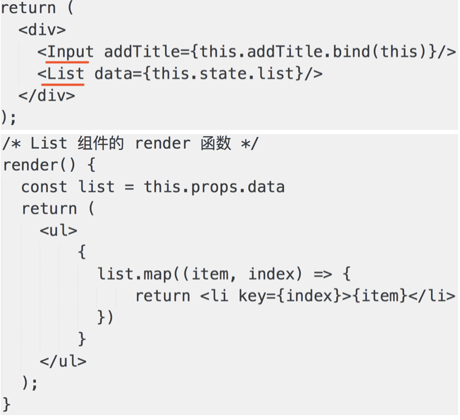
# 四、说一下 React setState 的过程
# 4.1 setState 的异步
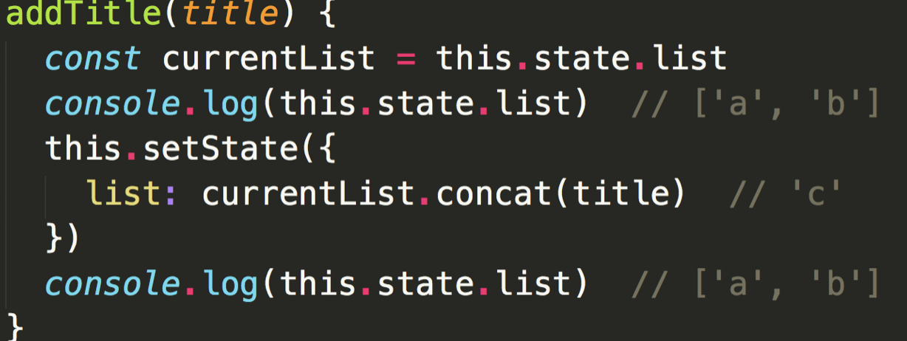
setState 为何需要异步？
- 可能会一次执行多次
setState - 你无法规定、限制用户如何使用
setState - 没必要每次
setState都重新渲染，考虑性能 - 即便是每次重新渲染，用户也看不到中间的效果
- 只看到最后的结果即可
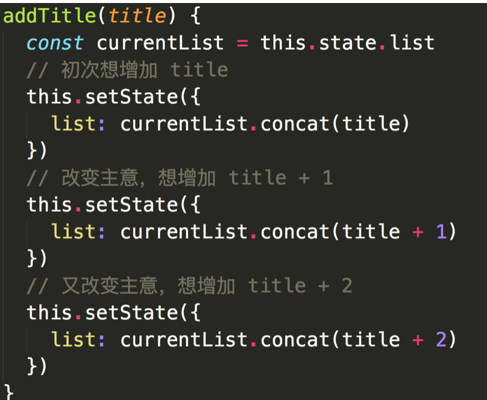
# 4.2 vue 修改属性也是异步
- 效果、原因和
setState一样
# 4.3 setState 的过程
- 每个组件实例，都有
renderComponent方法 - 执行
renderComponent会重新执行实例的render render函数返回newVnode，然后拿到preVnode- 执行
patch(preVnode, newVnode)
# 五、React vs vue
# 5.1 两者的本质区别
- vue - 本质是 MVVM 框架，由 MVC 发展而来
- React - 本质是前端组件化框架，由后端组件化发展而来
- 但这并不妨碍他们两者都能实现相同的功能
# 5.2 看模板和组件化的区别
vue- 使用模板（最初由angular提出）React- 使用JSX- 模板语法上，我更加倾向于
JSX - 模板分离上，我更加倾向于
vue
模板的区别
模板应该和 JS 逻辑分离
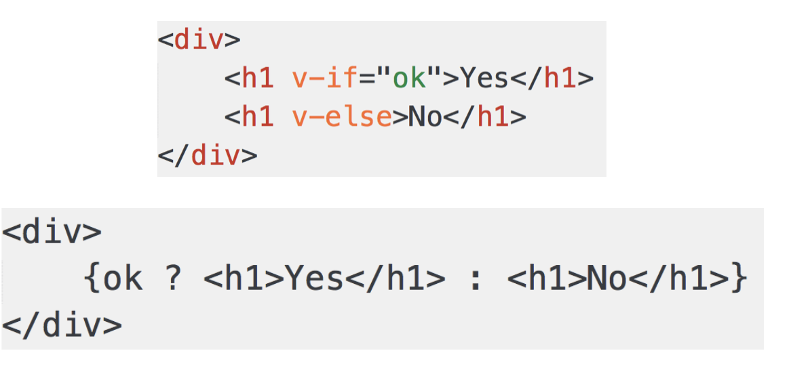
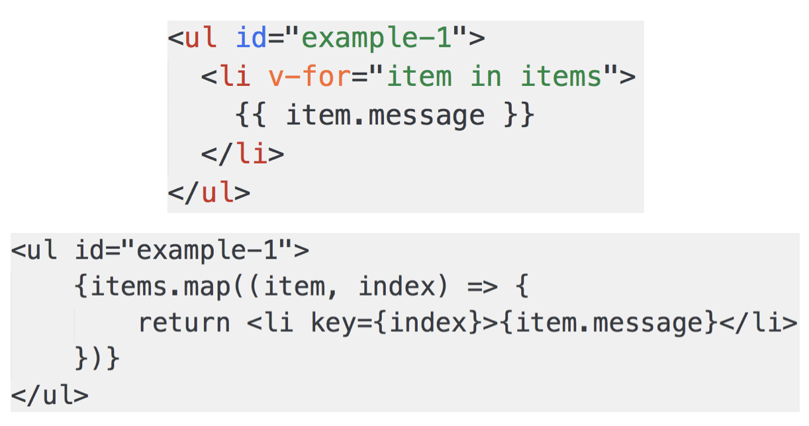
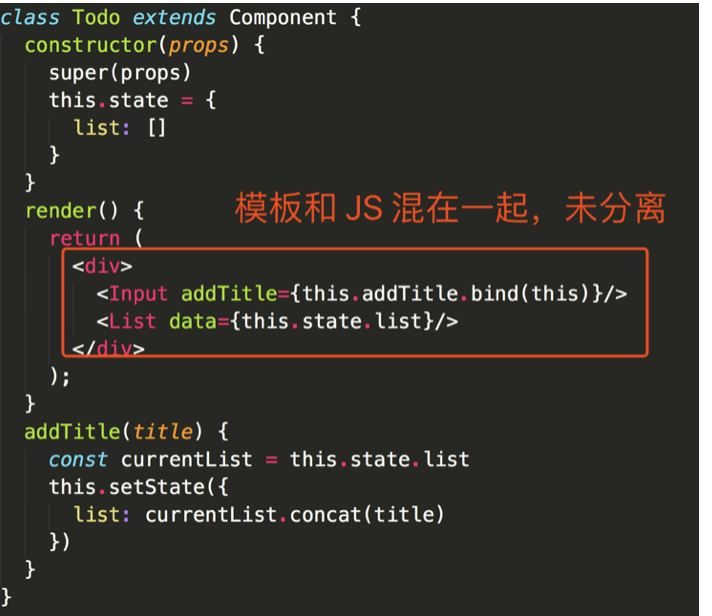
组件化区别
React本身就是组件化，没有组件化就不是Reactvue也支持组件化，不过是在MVVM上的扩展- 对于组件化，我更加倾向于
React，做的彻底而清晰
# 5.3 两者共同点
- 都支持组件化
- 都是数据驱动试图